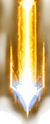

ARMAS DEL JUGADOR · FASE 55.2
50 sprites individuales transparentes extraídos de los originales. Cada tarjeta indica el número real de proyectiles por ráfaga. Esto es una herramienta de revisión, no una pantalla nueva del juego.
01 · Cañón fotónico
Mejora 1/51 proyectil por ráfagaMejora 2/52 proyectiles por ráfagaMejora 3/53 proyectiles por ráfagaMejora 4/54 proyectiles por ráfaga Mejora 5/55 proyectiles por ráfaga
Mejora 5/55 proyectiles por ráfaga 02 · Dispersor de plasma
Mejora 1/53 proyectiles por ráfagaMejora 2/53 proyectiles por ráfagaMejora 3/55 proyectiles por ráfaga Mejora 4/55 proyectiles por ráfaga
Mejora 4/55 proyectiles por ráfaga Mejora 5/57 proyectiles por ráfaga
Mejora 5/57 proyectiles por ráfaga 03 · Láser concentrado
Mejora 1/51 proyectil por ráfagaMejora 2/51 proyectil por ráfagaMejora 3/52 proyectiles por ráfagaMejora 4/52 proyectiles por ráfaga Mejora 5/53 proyectiles por ráfaga
Mejora 5/53 proyectiles por ráfaga 04 · Descarga de iones
Mejora 1/51 proyectil por ráfagaMejora 2/51 proyectil por ráfagaMejora 3/51 proyectil por ráfaga Mejora 4/52 proyectiles por ráfagaMejora 5/52 proyectiles por ráfaga
Mejora 4/52 proyectiles por ráfagaMejora 5/52 proyectiles por ráfaga 05 · Railgun estelar
Mejora 1/51 proyectil por ráfagaMejora 2/51 proyectil por ráfagaMejora 3/51 proyectil por ráfaga Mejora 4/52 proyectiles por ráfaga
Mejora 4/52 proyectiles por ráfaga
Mejora 5/52 proyectiles por ráfaga 06 · Emisor de ondas
Mejora 1/51 proyectil por ráfagaMejora 2/51 proyectil por ráfagaMejora 3/51 proyectil por ráfaga Mejora 4/51 proyectil por ráfagaMejora 5/52 proyectiles por ráfaga
Mejora 4/51 proyectil por ráfagaMejora 5/52 proyectiles por ráfaga 07 · Escuadrón de drones
Mejora 1/51 proyectil por ráfagaMejora 2/52 proyectiles por ráfagaMejora 3/52 proyectiles por ráfagaMejora 4/53 proyectiles por ráfaga Mejora 5/53 proyectiles por ráfaga
Mejora 5/53 proyectiles por ráfaga 08 · Cañón criogénico
Mejora 1/51 proyectil por ráfagaMejora 2/52 proyectiles por ráfagaMejora 3/53 proyectiles por ráfagaMejora 4/53 proyectiles por ráfaga Mejora 5/53 proyectiles por ráfaga
Mejora 5/53 proyectiles por ráfaga 09 · Generador gravitacional
Mejora 1/51 proyectil por ráfagaMejora 2/51 proyectil por ráfagaMejora 3/51 proyectil por ráfagaMejora 4/51 proyectil por ráfaga Mejora 5/52 proyectiles por ráfaga
Mejora 5/52 proyectiles por ráfaga 10 · Prisma galáctico
Mejora 1/52 proyectiles por ráfagaMejora 2/52 proyectiles por ráfagaMejora 3/53 proyectiles por ráfaga Mejora 4/53 proyectiles por ráfagaMejora 5/54 proyectiles por ráfaga
Mejora 4/53 proyectiles por ráfagaMejora 5/54 proyectiles por ráfaga